Tournoi des Six Nations 2022 féminin
Tournoi des Six Nations féminin aura lieu du 26 mars au 30 avril 2022
Tournoi des Six Nations féminin aura lieu du 26 mars au 30 avril 2022
| 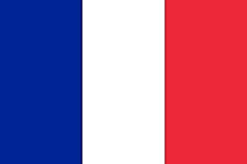France |  |
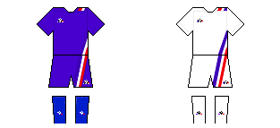Tenue |
|---|---|---|
| Entrée au Board:1989 Sélectionneur: Annick Hayraud (manager) Capitaine: Gaëlle Hermet Record de sélections: Laëtitia Salles (92) |
| Nom | Prénom | Age | Poste | Photo |
|---|---|---|---|---|
|
Arricastre |
Lise |
17 juin 1991 (30 ans) |
Pilier |
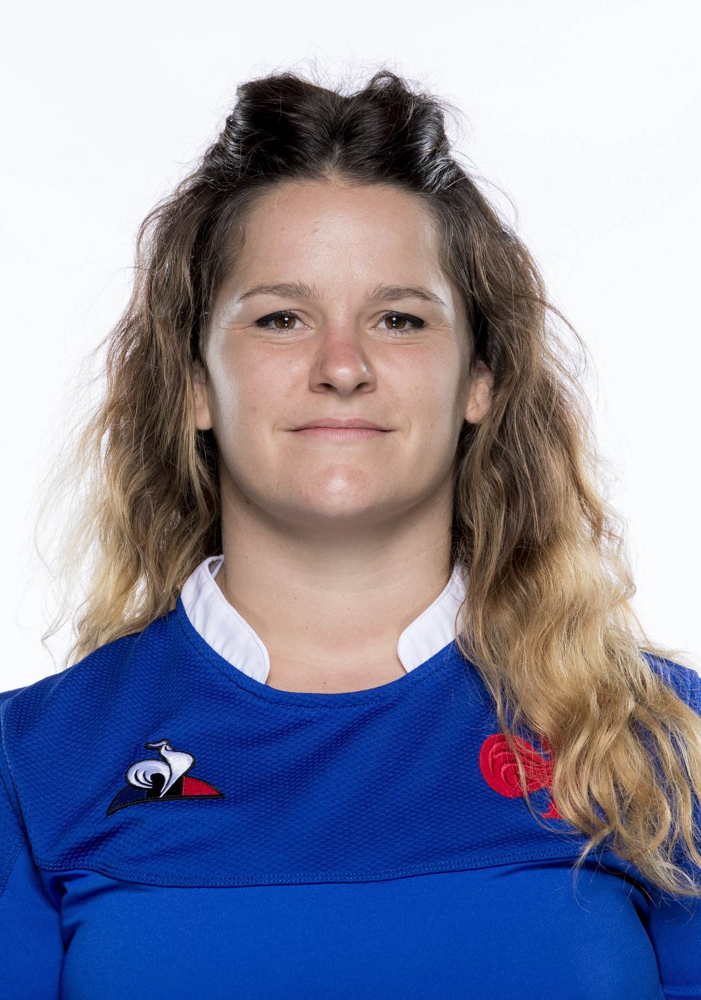 |
|
Bernadou |
Rose |
23 mars 2000 (21 ans) |
Pilier |
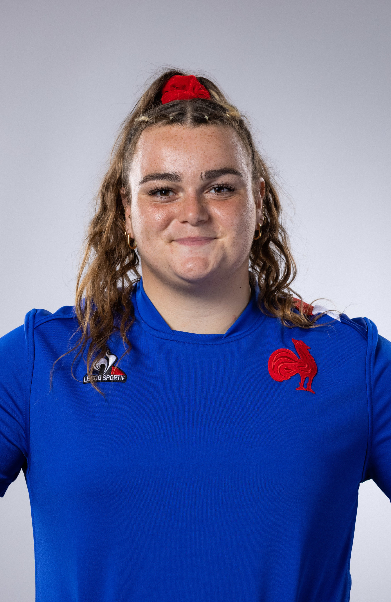 |
|
Joyeux |
Clara |
10 janvier 1998 (24 ans) |
Pilier |
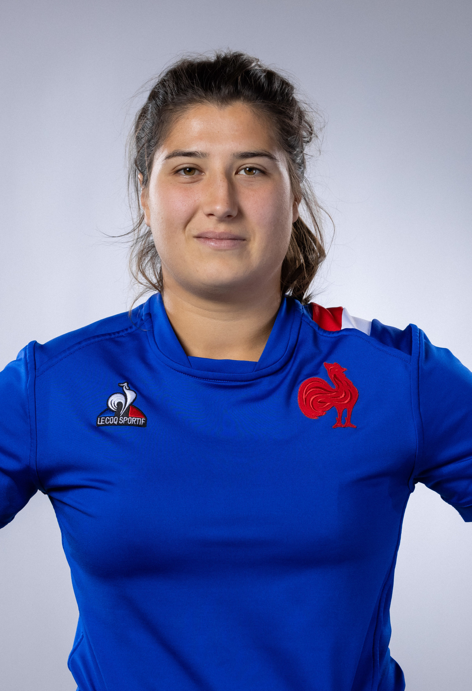 |
|
Sochat |
Agathe |
21 mai 1995 (26 ans) |
Talonneur |
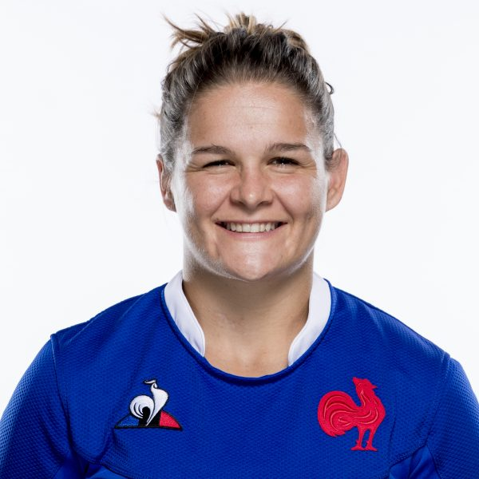 |
|
Thomas |
Caroline |
26 septembre 1991 (30 ans) |
Talonneur |
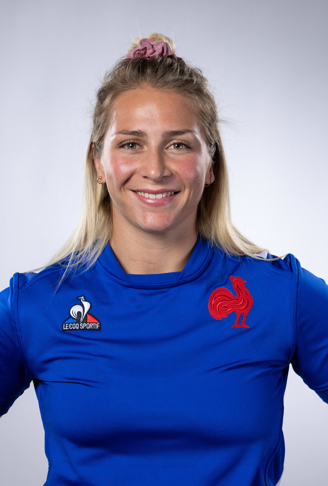 |
|
Corson |
Lénaïg |
15 mars 1989 (32 ans) |
Deuxième ligne |
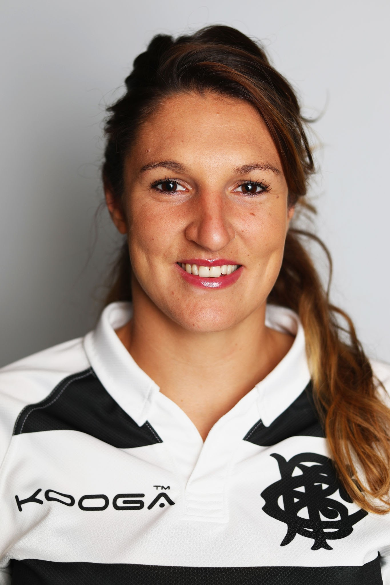 |
|
Fall |
Madoussou |
17 mars 1998 (23 ans) |
Deuxième ligne |
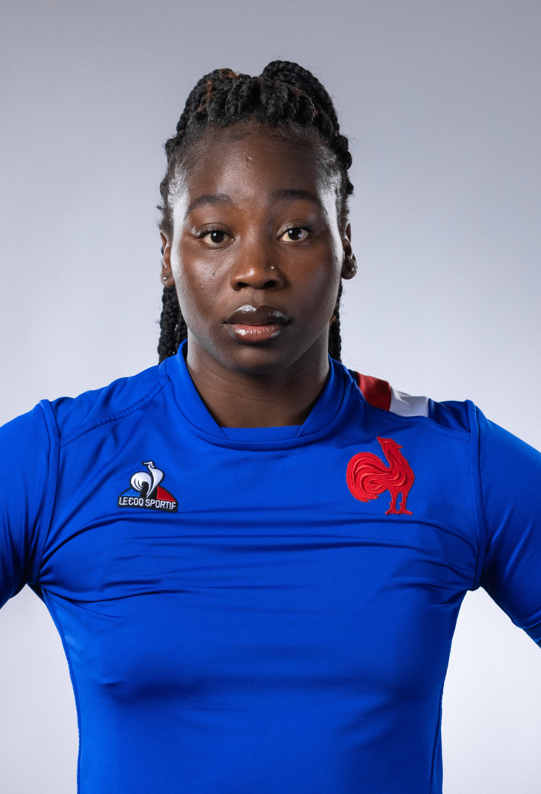 |
|
Ferer |
Céline |
21 juin 1991 (30 ans) |
Deuxième ligne |
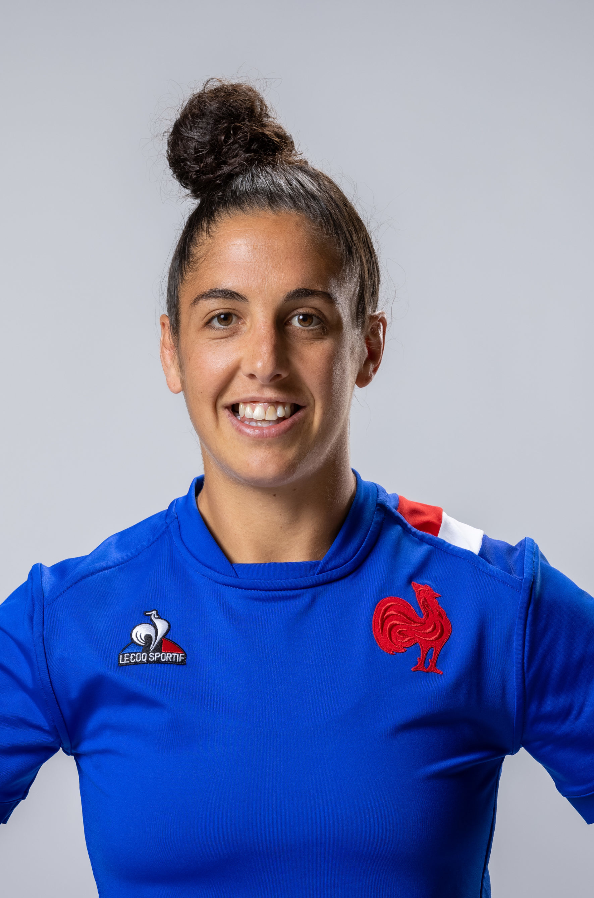 |
|
Forlani |
Audrey |
19 novembre 1991 (30 ans) |
Deuxième ligne |
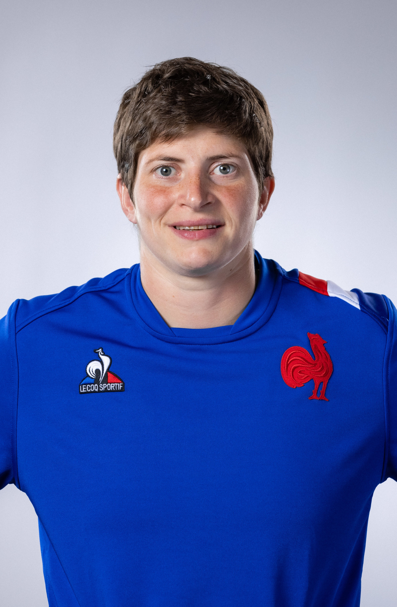 |
|
N'Diaye |
Safi |
16 juin 1988 (33 ans) |
Deuxième ligne |
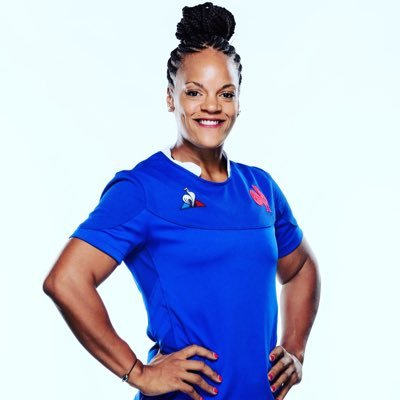 |
|
Annery |
Julie |
12 juin 1995 (26 ans) |
Troisième ligne aile et centre |
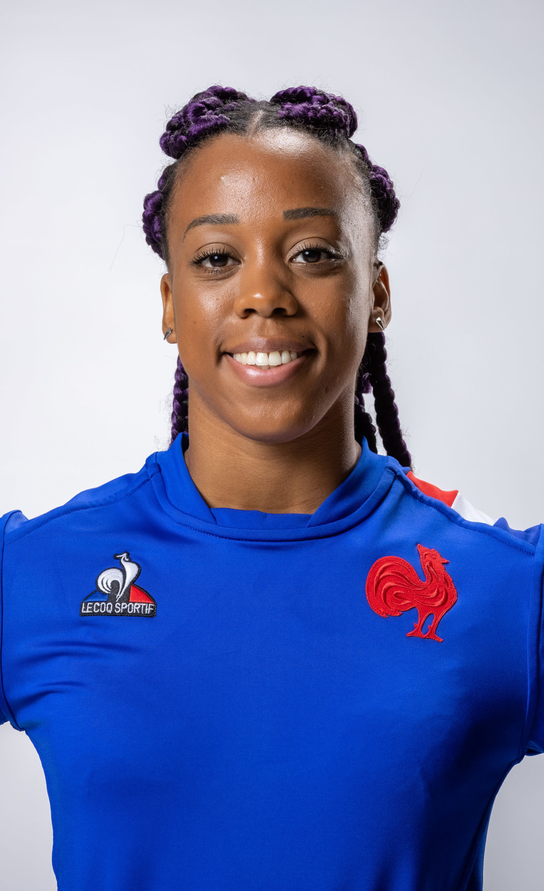 |
|
Diallo |
Coumba |
27 septembre 1990 (31 ans) |
Troisième ligne aile et centre |
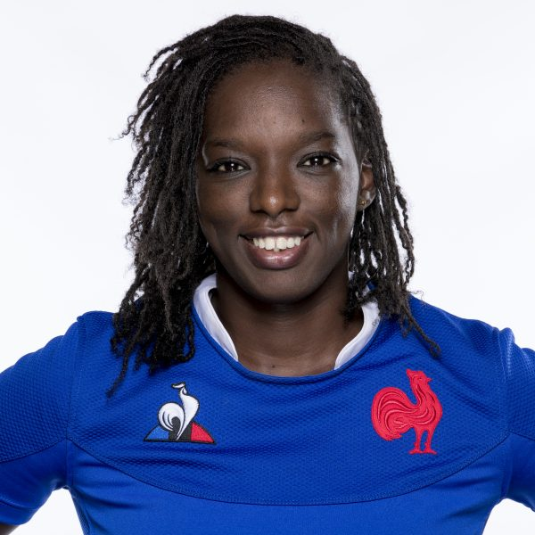 |
|
Hermet |
Gaëlle |
12 juin 1996 (25 ans) |
Troisième ligne aile et centre |
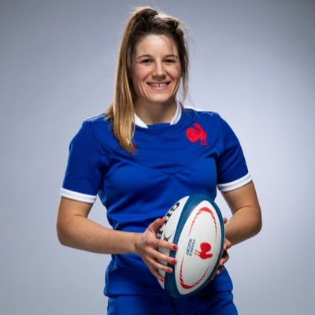 |
|
Gros |
Émeline |
19 août 1995 (26 ans) |
Troisième ligne aile et centre |
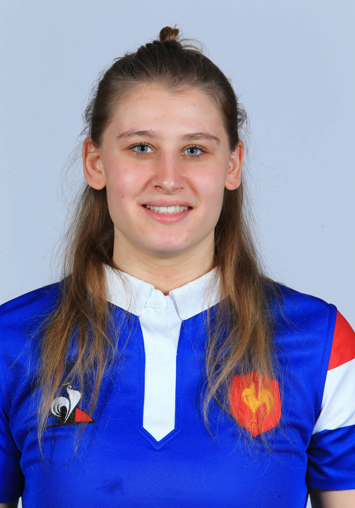 |
|
Ménager |
Romane |
26 juillet 1996 (25 ans) |
Troisième ligne aile et centre |
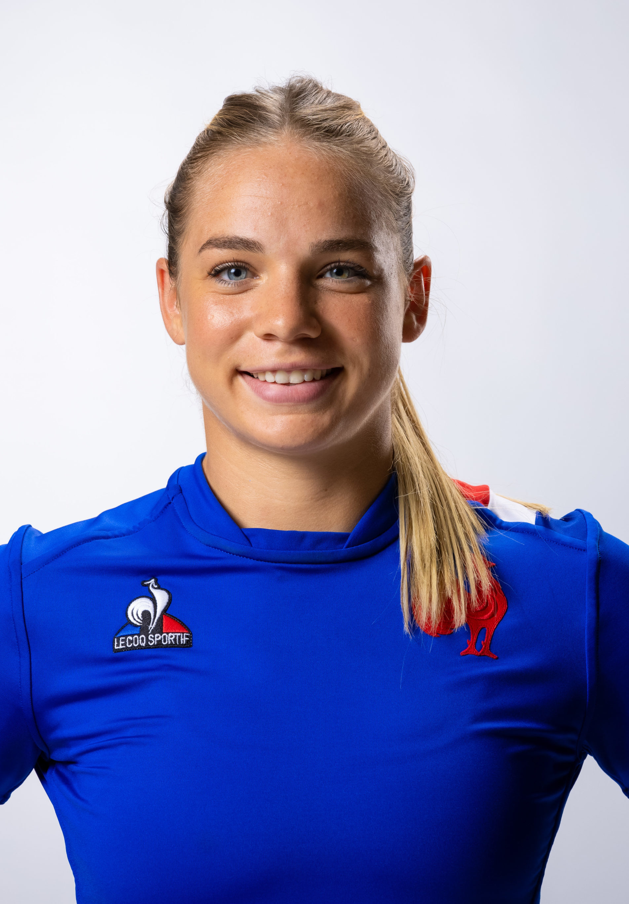 |
|
Bourdon |
Pauline |
4 novembre 1995 (26 ans) |
Demi de mêlée |
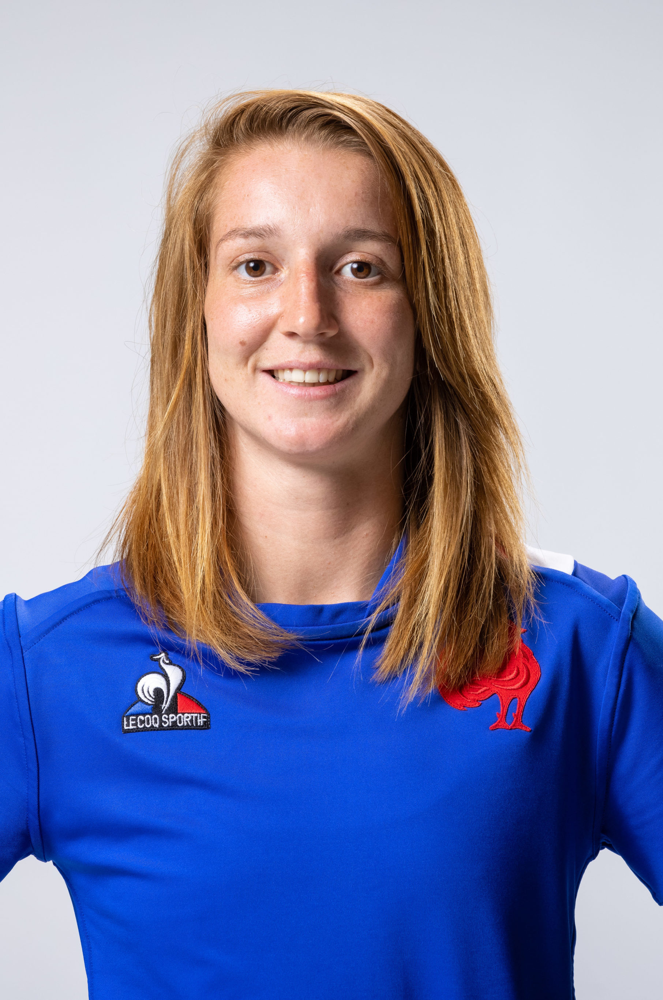 |
|
Sansus |
Laure |
21 juin 1994 (27 ans) |
Demi de mêlée |
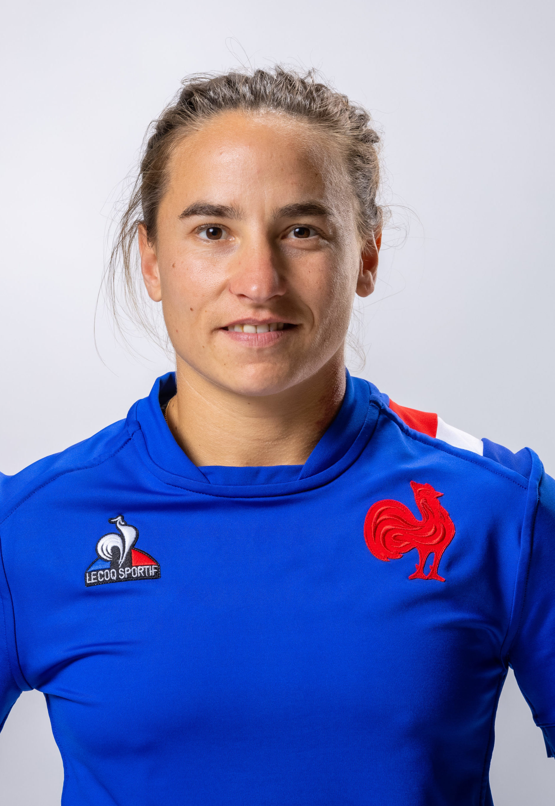 |